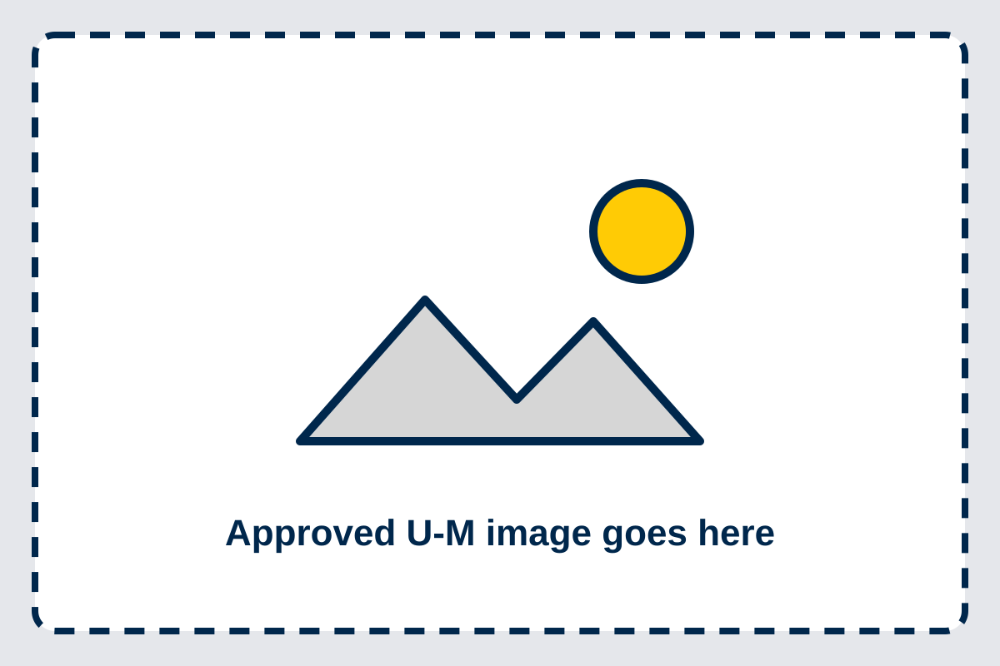

Where am I in it?
Follow your engaged learning journey
Choose the stage that best describes your work today. Each stage gives you actions, questions, and links to the same shared resource library.

Before the work begins
Preparing for the experience
Understand the opportunity, set useful goals, learn about the context, and identify the support or skills you will need.
Focus on
- Connect the experience to two or three learning goals.
- Review course, program, partner, and community expectations.
- Learn what you do not yet know about the context.
- Identify access needs, support, and skills to develop.
Resources for this stage
Build the foundation
Starting the experience
Use the beginning to establish relationships, make responsibilities visible, and agree on how the team and partner will communicate.
Focus on
- Learn how each person prefers to communicate and participate.
- Clarify the purpose, intended outcomes, and project boundaries.
- Assign roles while keeping responsibility shared.
- Agree on meetings, response times, decisions, and documentation.
Resources for this stage
Keep the work healthy
During the experience
Make progress visible, communicate before problems grow, navigate challenges constructively, and reflect while there is still time to adjust.
Focus on
- Review the plan and adjust it openly when conditions change.
- Share progress, questions, and risks before deadlines.
- Give specific feedback about work and behavior, not identity.
- Protect confidential information and respect community knowledge.
Resources for this stage
- Weekly progress checklist
- Navigating conflict guide
- Feedback conversation guide
- Midpoint reflection activity
Complete with care
Ending the experience
Finish agreed work, make the handoff usable, communicate results honestly, and close relationships with appreciation and clarity.
Focus on
- Confirm final deliverables, file access, ownership, and next steps.
- Explain limitations and unfinished work clearly.
- Present results in a format the intended audience can use.
- Thank partners and agree on appropriate future contact.
Resources for this stage
Carry learning forward
After the experience
Translate the experience into evidence of learning, maintain appropriate professional relationships, and apply what you learned to future work.
Focus on
- Name the skills you practiced and support them with specific evidence.
- Respect confidentiality when presenting work in a portfolio.
- Update resumes and interview stories with outcomes and learning.
- Follow up with partners only through agreed channels.
Resources for this stage
Need something specific?
Browse every resource in one place
Filter the library by stage, experience, or resource type.